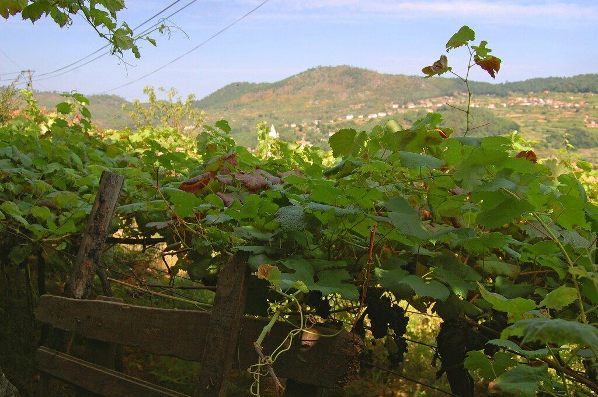

BLANCO
La región del Vinho Verde ocupa el verde y lluvioso noroeste de Portugal, en el Minho. Es conocida por sus blancos ligeros, frescos y aromáticos, y por los Alvarinho de Monção e Melgaço.

El noroeste de Portugal tiene una larga tradición vitícola, y sus vinos se exportaban ya a Inglaterra en la Edad Media. La región del Vinho Verde fue delimitada oficialmente en 1908 y es hoy una de las mayores denominaciones del país. El nombre no alude al color del vino, sino a su carácter joven y fresco, pensado para beberse pronto. Durante mucho tiempo la vid se cultivó en los bordes de los campos, trepando a los árboles (vinha de enforcado) o en parras altas (ramadas), para dejar el suelo libre a otros cultivos; hoy predominan las espalderas y otros sistemas modernos de conducción.
La región se extiende entre el río Miño, en la frontera con Galicia, y el Douro, y desde la costa atlántica hasta las montañas del interior. El clima es atlántico, con lluvias abundantes, temperaturas suaves y un paisaje muy verde. La denominación se divide en nueve subregiones: Monção e Melgaço, Lima, Cávado, Ave, Basto, Sousa, Baião, Paiva y Amarante. Monção e Melgaço, resguardada por montañas, es algo más cálida y seca, lo que favorece la maduración de la Alvarinho.
Predominan los suelos graníticos, ácidos, arenosos y poco profundos, que contribuyen a la acidez viva y al carácter ligero de los vinos.
La región trabaja con variedades autóctonas. Entre las blancas destacan la Alvarinho (Albariño), la Loureiro, la Arinto, conocida aquí también como Pedernã, la Trajadura (Treixadura), la Avesso y la Azal. Entre las tintas sobresale la Vinhão, de color muy intenso y acidez alta. El estilo más difundido es un blanco joven, ligero, de acidez marcada y graduación moderada, a veces con una ligera aguja. Junto a él existen vinos varietales más ambiciosos, especialmente de Alvarinho y Loureiro, que pueden ganar complejidad con el tiempo, así como tintos, rosados y espumosos. La Comissão de Viticultura da Região dos Vinhos Verdes controla la denominación, que también ampara aguardientes.
Cada subregión tiene sus especialidades: Monção e Melgaço está asociada históricamente a la Alvarinho, el valle del Lima a la Loureiro y Baião a la Avesso, mientras que la Vinhão se cultiva en buena parte de la región. Los blancos se suelen servir frescos y acompañan bien pescados, mariscos y la cocina tradicional del Minho.